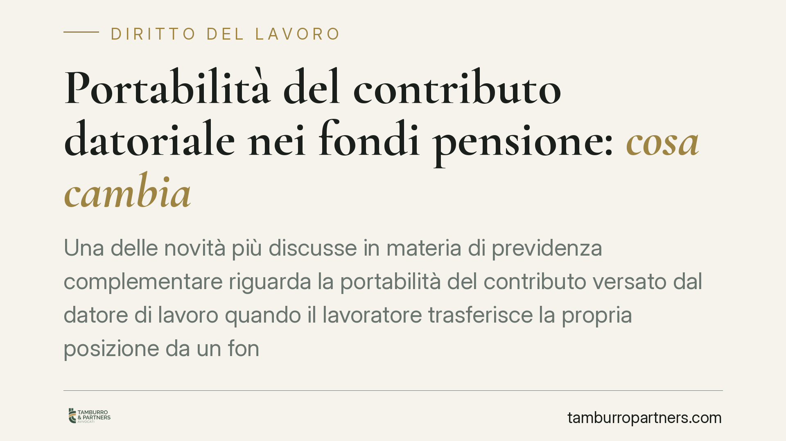

Portabilità del contributo datoriale nei fondi pensione: cosa cambia
Una delle novità più discusse in materia di previdenza complementare riguarda la portabilità del contributo versato dal datore di lavoro quando il lavoratore trasferisce la propria posizione da un fondo negoziale a un fondo aperto o a un Pip. Sindacati e datori sollevano dubbi sull'applicabilità in assenza di previsione nel CCNL, con rischio concreto di contenzioso.

Il quadro oggi: cosa è portabile e cosa no
La disciplina della previdenza complementare è contenuta nel D.Lgs. 5 dicembre 2005, n. 252. L'art. 14 regola le vicende della posizione individuale e consente al lavoratore di trasferire la propria posizione a un'altra forma pensionistica dopo un periodo minimo di permanenza (di norma due anni).
Qui sta il punto spesso frainteso. Allo stato della normativa vigente, ciò che il lavoratore può trasferire è la sola posizione individuale maturata: i versamenti propri, il TFR eventualmente conferito e i rendimenti. Il contributo datoriale non è portabile. Il motivo è che il versamento del datore di lavoro è previsto dal contratto collettivo in favore dell'adesione al fondo negoziale di riferimento: se il lavoratore esce da quel fondo per aderire a un fondo aperto o a un Pip, il datore non è obbligato a continuare a versare.
È proprio su questo limite che interviene la riforma annunciata, che mira a rendere portabile anche il contributo datoriale. Si tratta di un cambiamento di impostazione non secondario rispetto all'assetto costruito sull'art. 14.
Il nodo interpretativo: fonte legislativa contro fonte contrattuale
Qui emerge la criticità segnalata dalle parti sociali. Il contributo datoriale nasce da una previsione del CCNL, che lo àncora all'adesione a un determinato fondo negoziale. Una norma di legge che ne imponga la portabilità verso forme pensionistiche diverse interviene su un meccanismo di fonte contrattuale.
La questione non è teorica. Senza un adeguamento espresso del CCNL, datori e sindacati contestano l'automatica applicabilità dell'obbligo di versamento a fondi aperti o Pip scelti individualmente dal lavoratore. Il rischio è un contenzioso diffuso sulla sussistenza e sulla misura dell'obbligo contributivo in caso di trasferimento.
Sul piano operativo è atteso che la Covip, autorità di vigilanza sui fondi pensione, emani istruzioni per coordinare la nuova regola con la disciplina vigente e con i regolamenti dei fondi. Fino a quando il quadro attuativo non sarà definito, permane un margine di incertezza applicativa.
> Avvertenza di metodo: i riferimenti puntuali al veicolo normativo (numero della legge, articolo e comma) e la data di decorrenza vanno verificati sul testo definitivo pubblicato in Gazzetta Ufficiale. Allo stato, la decorrenza operativa è da considerarsi in attesa di conferma e non va assunta come certa.
Il trattamento fiscale del contributo datoriale
Per il datore di lavoro il tema non è solo gestionale ma anche fiscale e contributivo. L'art. 8 del D.Lgs. 252/2005 disciplina i finanziamenti alle forme pensionistiche complementari e fissa i limiti di deducibilità dei contributi versati, propri e del datore, entro il massimale annuo previsto (5.164,57 euro, salvo le ipotesi particolari di prima occupazione).
La portabilità del contributo datoriale verso fondi aperti o Pip impone quindi di verificare che il trattamento di favore – deducibilità entro i massimali e regime contributivo agevolato – resti invariato anche quando il versamento confluisce in una forma pensionistica diversa da quella negoziale. È un profilo da monitorare nelle istruzioni attuative.
Implicazioni pratiche differenziate
Per il lavoratore: la possibilità di portare con sé il contributo datoriale amplia la libertà di scelta della forma pensionistica, ma espone al rischio di decisioni assunte in un quadro ancora incerto.
Per il datore di lavoro: cambia potenzialmente la platea e la destinazione dei versamenti, con impatto su costi, gestione amministrativa e profili di deducibilità.
Per le parti sociali: si apre la necessità di adeguare i CCNL per evitare il disallineamento tra legge e contratto collettivo, principale fonte di contenzioso.
Cosa fare in concreto
Se sei un lavoratore:
- Non avviare il trasferimento prima di aver verificato il trattamento effettivo del contributo datoriale nella nuova forma pensionistica.
- Richiedi al fondo di destinazione conferma scritta sulla gestione del versamento datoriale.
Se sei un datore di lavoro:
- Verifica cosa prevede il tuo CCNL sul contributo datoriale e sulla sua destinazione.
- Monitora le istruzioni attuative della Covip prima di modificare procedure di versamento.
- Controlla il rispetto dei massimali di deducibilità ex art. 8 D.Lgs. 252/2005 in caso di versamento a forme diverse.
Per entrambi: consigliamo di formalizzare ogni richiesta e risposta per documentare le decisioni assunte in attesa del quadro attuativo definitivo.
Contributo informativo a cura di Tamburro & Partners Avvocati. Non costituisce parere legale.
Ogni storia di lavoro ha i suoi tempi.
Se gestisci HR e vuoi un confronto su contenzioso, ispezioni o licenziamenti, scrivi allo studio. Ti rispondiamo entro un giorno lavorativo.